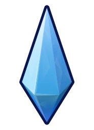

Rebirth
How rebirthing works
What will my next rebirth give?
Enter your life and your cash (like 25Qn or 1.5e+45). Prices come from the wiki's formula, so they can be very slightly off from the game. Planning a long grind? Use the Rebirth Tracker.
How the price climbs
Each life costs more than the last. The price starts at $25Qn and stops rising at $10NVSPTGNTL (1e+241). Hover the chart to see the price at any life.
Full price table from the wiki
| Life | Price | Note |
|---|
Life skipping
Rebirth with much more cash than the price and, if it's on in Settings, you skip extra lives: one extra life for every suffix (×1,000) above the price, up to 20 at once. Skipping gives Shards of Life, better odds of Advanced and Decimal Rarity items, and a better chance of an Inferno Box.
Items per rebirth
Chance of getting 1, 2 or 3 items, by how many lives you skip.
From the game's code as of September 2019; it may not be exact.

Shards of Life
You earn half the lives you skip, rounded up. Spend them on platforms, forging Enchanted items and buying other Reborn items. Salvaging Reborn items at The Craftsman also gives them.
Rebirth items
The lower an item's rarity number, the rarer it is. Most Reborn items can be evolved into a stronger version. Click an item to open it in the Item Index.
No items match
Try another search or clear the filters.